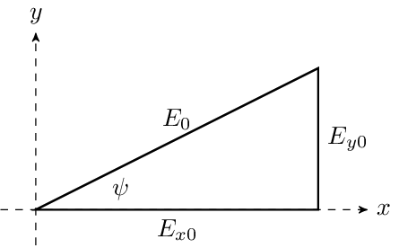

where the amplitude of the phasor (and therefore the real electric field) is $E_0 = |\vec{E}| = \sqrt{|E_{x0}|^2 + |E_{y0}|^2}$. Note from the figure that \begin{aligned} |E_{x0}| &= E_0 \cos{\psi} \\ |E_{y0}| &= E_0 \sin{\psi}. \\ \end{aligned} The real electric field is \begin{aligned} \vec{\mathcal{E}}(z,t) &= \operatorname{Re}(\vec{E}\, \mathrm{e}^{j\omega t}) \\ &= \hat{x}|E_{x0}|\cos(\omega t - kz + \delta_x) + \hat{y}|E_{x0}|\tan\psi\cos(\omega t - kz + \delta_x + \delta)\\ &= E_{0}\left[\hat{x}\cos{\psi}\cos(\omega t - kz + \delta_x) + \hat{y}\sin{\psi}\cos(\omega t - kz + \delta_x + \delta)\right], \\ \end{aligned} where $\operatorname{Re}()$ means take the real part. For ease of visualization, consider the electric field in the $z=0$ plane with $\delta_x = 0$, in which case the real electric field is \begin{aligned} \vec{\mathcal{E}}(0,t) &= E_{0}\left[\hat{x}\cos{\psi}\cos(\omega t) + \hat{y}\sin{\psi}\cos(\omega t + \delta)\right]. \\ \end{aligned} The visualization below shows the path traced by the electric field vector (blue curve) in the $z=0$ plane as a function of $\psi$ and $\delta$. When the animation is started, the instantaneous electric field vector is shown as a red arrow.